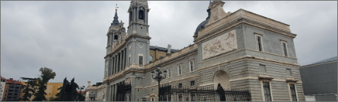

|  | |||
|---|---|---|---|
| 스페인 | 스페인 마드리드 알무데나 대성당 마드리드 왕궁과 붙어있어 함께 방문하기 좋은 마드리드 알무데나 대성당 박물관이나 전망대에 가지 않고, 성당 내부만 둘러보고 싶은 관광객이라면 무료로 입장할 수 있어요. | ||
| 유럽여행 | 대성당 | 여행추천 | 유럽의 성당답게, 높은 천장을 가지고 있고, 여행이 끝난 후 다른 성당들을 떠올리며 비교해보니 엄청 모던하다는 생각이 듭니다. 확실히 오래되지 않은 성당이라서 그런지 좀 깔끔하고 디자인도 모던해요. |
| 여행시간 | 3시간 | 여행일자 | 2022. 12. 07 |
정식 명칭은 산타마리아 라 레알 데 라 알무데나 대성당이다. 스페인 왕실의 주성당으로 1883년 알폰소 12세가 주교좌 성당을 건축키로하고 1944년 완공 되었다. 신 고딕양식으로 지어졌다. 마드리드의 수호성모 알무데나를 기리는 성당이다.'성벽' 이라는 뜻의 '알무데나'라는 이름은 711년에 이슬람 세력이 이베리아 반도를 거슬러 올라와 마드리드를 점령했을 때 아랍어로 '알무데나'라고 불리는 성벽속에 숨겨두었던 성모상이 무려 370년 후에 다시 발견되어 알무데나 대성당이라고 이름 붙여졌다